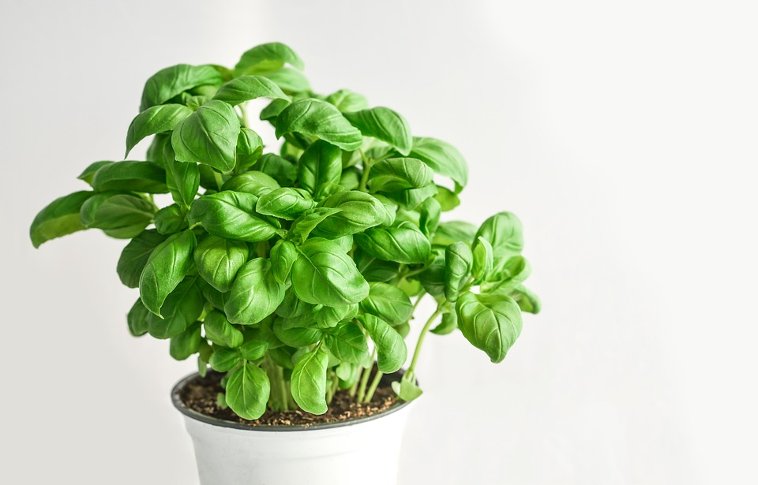

Albahaca

- Forma de siembra: Almácigo (Septiembre)
- Transplante: Octubre-Noviembre
- Asociación benefica: tomates, pimientos, espárragos
- Asociación dañina: Ruda, salvia
Batata
- Forma de siembra: Almácigo(Agosto)
- Transplante: Octubre
- Asociación benefica: cebollas, calabaza, yuca, tomates, pepinos
Berenjena
- Forma de siembra: Almácigo (Agosto-Septiembre)
- Transplante: Octubre-Noviembre
- Asociación benefica: ajo, apio, borraja, cebolla, col, escarola, espinaca, judía, lechuga, patata, puerro, rábano, zanahoria.
- Asociación dañina: pepino
Calabaza
- Forma de siembra: Directa a golpes(Octubre-Noviembre)
- Asociación benefica: maíz, melón, calabacín.
- Asociación dañina: papa
Maiz dulce
- Forma de siembra: Directa a golpes (Octubre-Diciembre)
- Asociación benefica: Papa, habas, guisantes, calabaza, pepino, calabacín.
- Asociación dañina: tomate
Melón
- Forma de siembra: Directa a golpes(Octubre)
- Asociación benefica: cebolla, arveja, lechuga, maíz
Papa
- Forma de siembra: Directa (Agosto-Febrero)
- Asociación benefica: berenjena, repollo, haba, poroto verde, maíz, puerro, rábano, zanahoria
- Asociación dañina: apio, pepino, pimiento, tomate
Pepino
- Forma de siembra: Directa a golpes(Octubre)
- Asociación benefica: Ajo, albahaca, apio, borraja, cebolla, repollo, espárrago, arveja, poroto verde, lechuga, maíz, nabo, rábano, remolacha
- Asociación dañina: berenjena, patata, tomate.
Pimiento
- Forma de siembra: Almácigo (Julio-Agosto)
- Transplante: octubre
- Asociación benefica:Acelga, ajo, albahaca, repollo, espinaca, arveja, poroto verde, lechuga, puerro, rábano.
- Asociación dañina: Patata.
volver